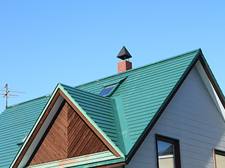

- TOP
- フォロー体制
Follow
充実のアフターフォローで施工後も安心
一度施工すれば10～15年は持つとされる外壁の塗り替えですが、さまざまな原因で予定よりも早く塗装面に不具合や劣化が生じる場合があります。こんなケースでも安心していただけるよう、日野・八王子のペイントワークスでは保証書や5年無料補修、年に1度の定期点検など独自のアフターフォローを整備しています。だから、施工後も安心。皆様のお宅の外壁塗装は実績と信頼のペイントワークスにお任せください。
充実のアフターフォロー
ペイントワークスはお客様に末永くご満足いただくために、施工後のアフターフォローにも力を入れています。
年に1度の定期点検で
施工後も安心
塗装品質に自信があるペイントワークスですが、さまざまな条件により施工後、塗装面に不具合が生じることもまれにあります。そこで、当社では年に1度の定期点検を実施し、お客様が気づきにくい異変まで細かくチェック。問題があれば迅速に補修を行いますのでご安心ください。
保証書を発行。
施工後5年間無料補修

ペイントワークスでは、すべてのお客様に詳細事項を記載した「保証書」をお渡しします。万が一、当社の施工が原因で不具合が発生した場合は、5年間無料で補修させていただきます。もちろん、緊急の際にも迅速な対応をお約束します。
あらゆるトラブルにも迅速対応
施工が直接的な原因ではないトラブルでもペイントワークスなら迅速に対応いたします。
少しでも外壁や塗装面に異変を感じたら、すぐにご連絡ください。可能な限り、早急にお伺いし、適切に対策いたします。
外壁塗装以外でも頼りになります

外壁の塗り替え以外でも、ご自宅のことでお困りごとがありましたらご遠慮なくペイントワークスにご相談ください。「屋根の塗り替え、葺き替えがしたい」「増改築やリフォームがしたい」──皆様のそんなご要望にも柔軟な施工力で的確にお応えいたします。またペイントワークスの守備範囲を超えたご要望には信頼できる業者をご紹介いたします。
助成金の代理申請もお任せください
八王子市では、住宅の改修に対して「居住環境整備補助金」が支給されます。もちろん、外壁の塗り替えもこの制度の対象。なお、補助金を受けるには申請が必要です。もし、お客様ご自身が申請手続きを行う場合は、当社が作成した見積書が必要となりますので、できるだけ早めにご相談ください。
なお、ペイントワークスでは申請手続きの代行を承っています。ご希望の方はお気軽にお申し付けください。なお、この補助金の付与は先着順となります。確実に補助金を受けるためにも、当社に申請手続きをお任せください。